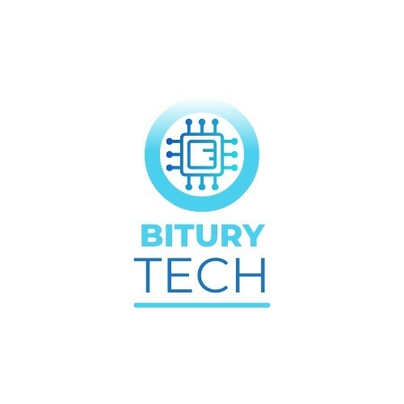

Sobre Nós
Nossa História
A BituryTech é uma empresa que surgiu no ano de 2023, com a disciplina "Projeto Interdisciplinar 3 " aliada ao programa Catalisa, ocorreu a fundação. Ela é uma empresa Júnior de Engenharia da Computação da UFRPE com objetivo de trazer inovações com o uso de tecnologias emergentes, como a Inteligência artificial presente no nosso aplicativo Chronusgram que une a Redes Neurais com as suas dificuldades para encontrar o melhor aproveitamento do seu tempo e assim você obter o melhor aproveitamento do seu tempo, pois Quanto vale seu tempo ?
Nossos Fundadores
José Yrikes, Pedro Henrique, Victor Eduardo, Vinicius Alessandro e Wandson Emanuel